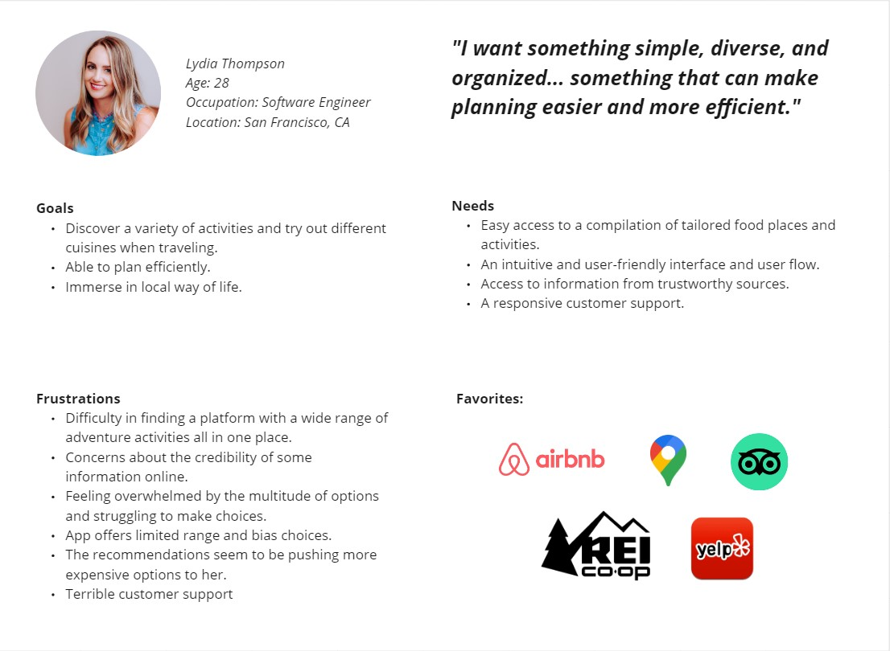

Design of Travel App
Background
When I initially joined the bootcamp, our introductory project involved designing a travel app. Being new to this field, I felt a bit overwhelmed. Conversations with my peers revealed a common focus on streamlining flight and accommodation bookings, a logical starting point for trip planning. I followed suit at the time, but a feeling of something missing lingered. As the curriculum progressed, that initial project was momentarily set aside. It wasn't until six months later that I revisited it, and a wave of questions resurfaced. Why had I fixated on the booking process? There's an abundance of apps, websites, and travel agencies dedicated to this task. What unique value could I offer by replicating what was already plentiful in the market?
With that in mind, I decided to start the project anew. I brainstormed and wrote out new interview questions. This led me to interview five advid travelers, each offering their unique experiences and perspectives. Their insights were able to offer a fresh and enlightening angle for this entire project.
Project Overview
This project was done solo. To mimic the intensity of the bootcamp, I set the timeline of this project to be a 3-day sprint.
The objective of this project was to enhance my proficiency in conducting efficient research, since I want my focus to be on UX research. Throughout the project, I primarily utilized tools like Miro, Figma, and FigJam to craft empathy maps, user personas, and feature prioritization matricies.
What I did
After conducting my interviews, I sorted out the data onto Miro board and created an affinity diagram.

It became evident during the interviews that each user had their preferred approach for booking flights and accommodations, be it through Google, booking platforms, travel agencies, or directly with airlines. None of them expressed significant concerns or pain points about the booking process. However, a common theme emerged across all five interviews: organizing the trip comprehensively. This included planning activities, discovering suitable dining places, and identifying places to visit.
As I delved deeper into their methods for choosing destinations, the most common response I got was 'I use Google.' Upon further probing for details, their explanations varied. Some mentioned, 'Google and travel apps provide recommendations for tourist spots, but they lack authenticity.' One user stated, 'I prefer using TikTok to discover locations'.
The more intersting insight that I received was from Mati. He is somoene who doesn't use any websites or travel apps when he plans for his trip. Instead, he opts to trust the locals with the information. He apprciated tourist areas, but to him, the real way to experience local life and uncovering hidden gems involed engaging with local bartenders, waiters, and other community members. In his opinoion, this provides deeper insights than any online resources or app could offer.

With the insight I've obtained from my interviewers, I compiled the information and created an empathy map, which then lead to the creation of user persona.
I then built two user personas based on the research that I gathered. (displayed above and below)